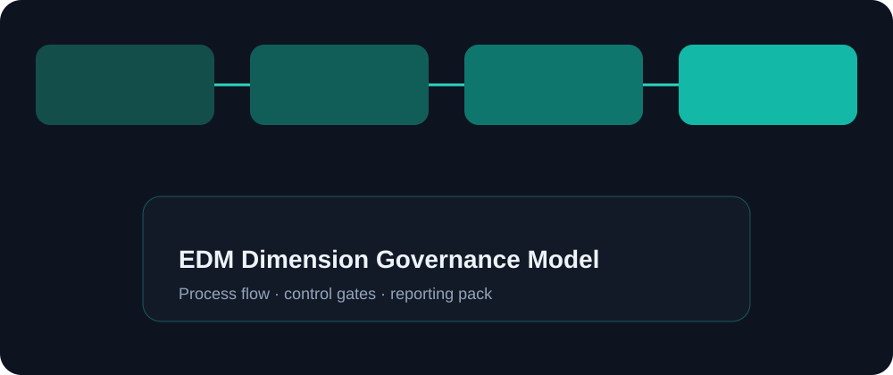

Objective
Design dimension governance so values and hierarchies stay consistent across finance systems.
Enterprise dimension governance for CoA and EPM — request workflows, hierarchy ownership, validation rules, and sync checkpoints across Fusion and EPM Cloud.
Knowledge / portfolio case study only. Not employment history, not a named client engagement, and not a certification claim.
Design dimension governance so values and hierarchies stay consistent across finance systems.
When dimensions drift between GL and EPM, plans and actuals stop aligning.
Request-to-publish workflow, owner model, validation rules, and sync checkpoints.
Define dimensions in scope → assign owners → design request form → set validations → publish cadence → verify consumers (GL/EPM).

Request new cost center → validate → approve → publish → confirm availability in GL and planning.
No direct rogue values in consumers; every change has requester + approver; hierarchy orphans blocked.
Demonstrates cross-system dimension discipline for Fusion + EPM.